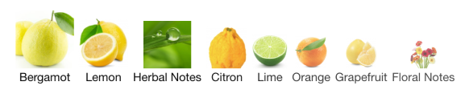
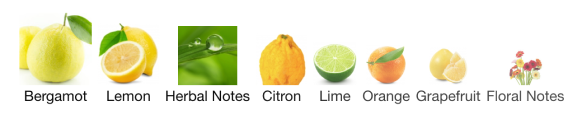

The Origin of Perfume
So far it was assumed that the perfume had arisen about 9000 years ago. At the beginning of perfume, perfumes were mostly a mixture of plants or plant parts that were either dissolved in oil
South Africa, for example, 77,000-year-old beds made of plants were found. These leaves had a poisonous effect on insects and thus kept even the smallest pests such as fleas and lice away.

Theophrastus
he gave the first insight from a Western point of view into perfumery


- considered the "father of botany" for his systematic study of plants
- talks the positive effect of some perfume oils on tumors, abscesses, headaches, and exhaustion
In his works, particularly "On Odours" (De odoribus), Theophrastus discussed various uses of perfumes and aromatic oils, including some medicinal applications. His observations on the potential therapeutic effects of certain scented oils on ailments like tumors, abscesses, headaches, and exhaustion reflect the early understanding of aromatherapy and herbal medicine in ancient Greek culture.
Dioscurides
Greek doctor

- reports on the fragrance effect of plants that he got to know on his travels to Egypt
- one of the first to call for the separation of pharmacy from perfumery
- talked about social and collective nature of fragrance use in Roman public life, without touching on personal use or other aspects
Pliny the Elder
through him, we know today that the Romans liked to spray rose water with a fragrant scent in their theaters.

The purpose of the scented water was likely used to refresh the audience, mask unpleasant odors, and create a more pleasant atmosphere in the crowded theaters.
The Roman practice of spraying scented rose water in theaters highlights how fragrances were an integral part of their shared social experiences.
- The Romans had developed a type of early "sprinkler system" to distribute the scented water.
Galen

Indirectly, Galen contributed to the fact that the perfume split into the following three sectors
- Fine perfumery, in which enjoyment of fragrance, attractiveness, and well-being are in the foreground.
- functional perfumery, which makes things more attractive and therefore also makes them.
- aromatherapy, which adheres to the border area of medicine and pharmacy and wants to contribute to the alleviation of diseases and the improvement of well-being.
These three areas are increasingly overlapping. This is also due to groundbreaking findings from new methods of brain and smell research as well as changed expectations of consumers of perfumes.
Longest longest-selling perfume

 

Cologne by Farina
Cologne by Farina, now called “Farina 1709”. It has been selling for over 400 years. The longest-selling perfume used to be a perfume called “Hungarian Water” brought to the market by the Queen of Hungary in the 14th century. It sold for 400 years until the formula was lost